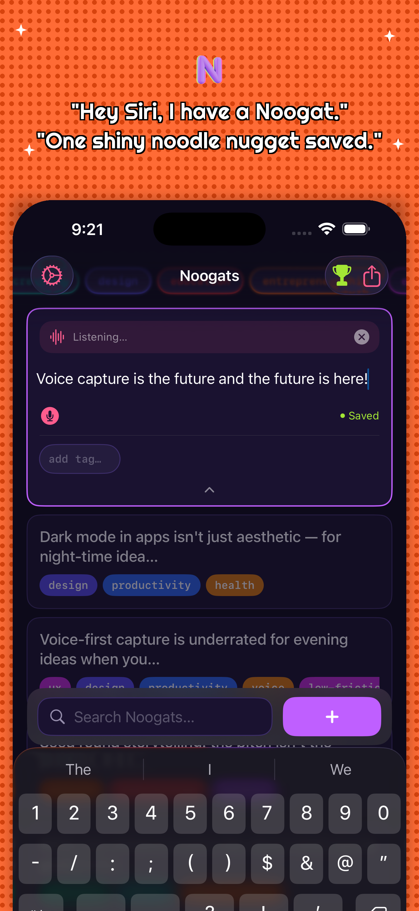

Noogat
Voice Notes that Organize Themselves.
Say "Hey Siri, I have a Noogat" and your note is saved instantly — no tapping, no unlocking. AI auto-tagging means you can always find it again.
The Search Engine for Your Thoughts.

Capture time
0s
To start
Free
Platform
iOS
"Hey Siri, I have a Noogat." — hands-free voice notes, always findable